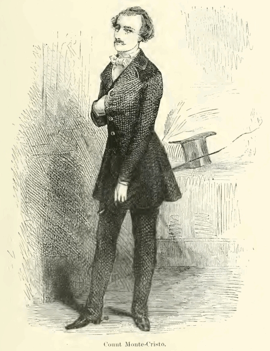
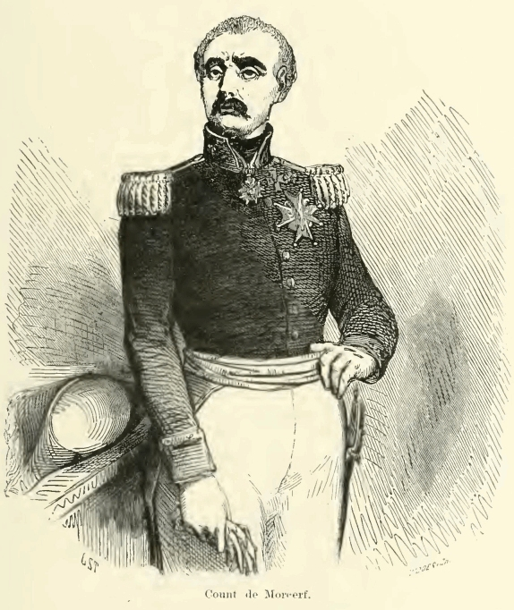
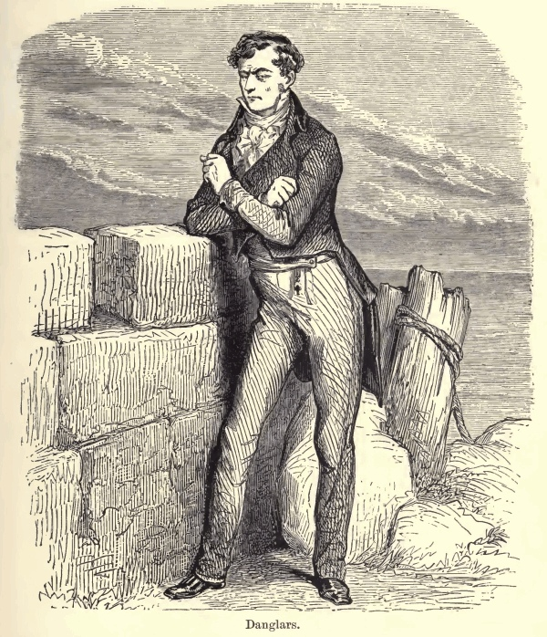
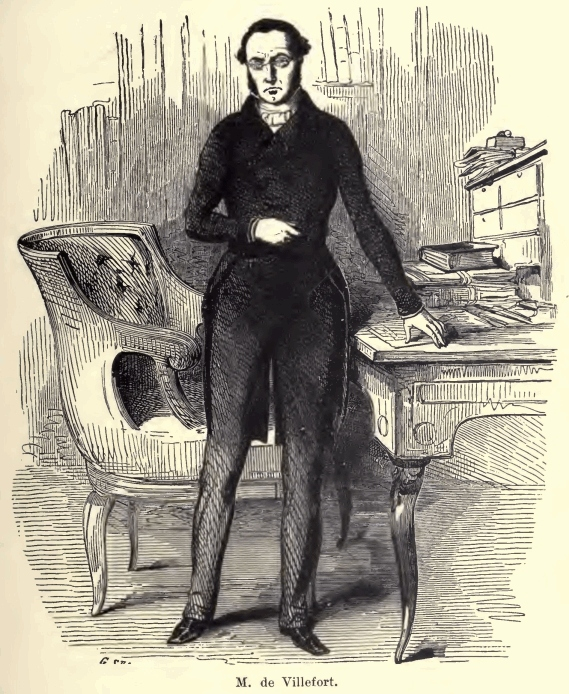

EDMOND DANTÈS
CONDE DE MONTE CRISTO

A vítima da denúncia torna-se o articulador de um plano que expõe seus antigos perseguidores.
Arquivo 04 · Painel investigativo
Dossiês baseados no romance: motivos, segredos e consequências da vingança.
Aviso: esta página revela acontecimentos e desfechos da história.

A vítima da denúncia torna-se o articulador de um plano que expõe seus antigos perseguidores.

Selecione o alvo para iniciar.
Conexão no arquivo: Haydée.
Voltar ao centro do plano
Selecione o alvo para iniciar.
Conexão no arquivo: Danglars.
Voltar ao centro do plano
Selecione o alvo para iniciar.
Conexão no arquivo: Benedetto.
Voltar ao centro do planoAs famílias dos alvos não são apenas extensões de seus crimes. Quando inocentes sofrem, o conde precisa rever a convicção de que sua vontade equivale à justiça.
Ler sobre as consequências